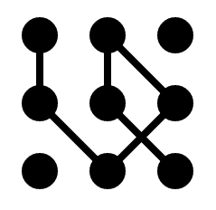

jspsych-palmer
The Palmer plugin displays a programmatically generated stimulus designed to mimic stimuli used by Palmer (1977) and Goldstone et al. (2005).
The stimuli look like this (there are several options to configure the appearance of the stimuli below):

Subjects can edit the stimuli by clicking on two adjacent circles to add or remove a line segment between them. The plugin also contains a function for generating non-editable versions of the stimuli that can be used in other plugins that accept HTML-formatted stimuli, like the single-stim and categorize plugins.
Dependency
This plugin requires the Raphael-js library, available at http://www.raphaeljs.com. You must include the library in the <head> section of your experiment page.
Parameters
This table lists the parameters associated with this plugin. Parameters with a default value of undefined must be specified. Other parameters can be left unspecified if the default value is acceptable.
| Parameter | Type | Default Value | Description |
|---|---|---|---|
| configurations | array | undefined | Array of stimulus configurations. Each configuration is an array of 1s and 0s. A 1 represents the presence of a line segment, and a 0 represents the absence of a line segment. The number of elements in a configuration array should be the number of possible line segments in the stimulus. For the default size of 3x3, this is 20 (6 horizontal + 6 vertical + 8 diagonal). The order of the lines in the array are horizontal, vertical, and then diagonal. The easiest way to see this is just to try different configurations. This represents the target configuration, as the stimulus will be blank initially. |
| show_feedback | boolean | false | Show corrective feedback after the subject submits a response. |
| grid_spacing | numeric | 75 | Distance in pixels between the rows and columns. |
| circle_radius | numeric | 20 | Radius in pixels of the circles. |
| square_size | numeric | 3 | Number of rows and columns in the stimulus. |
| timing_feedback | numeric | 1000 | How long to show the feedback for in milliseconds. |
| prompt | string | "" | This string can contain HTML markup. Any content here will be displayed below the stimulus. The intention is that it can be used to |
Data Generated
In addition to the default data collected by all plugins, this plugin collects the following data for each trial.
| Name | Type | Value |
|---|---|---|
| rt | numeric | The response time in milliseconds for the subject to make a response. The time is measured from when the stimulus first appears on the screen until the subject's response. |
| correct | boolean | true if the subject produced exactly the right configuration. |
| configuration | JSON string | Configuration that the subject produced, in the same format as the configuration array parameter for the trial. |
| target_configuration | JSON string | The correct configuration (from configuration parameter). |
| num_wrong | numeric | The number of line segments that didn't match between what the subject produced and the target configuration. |
Stimulus Creation
The palmer plugin contains a stimulus generation method (jsPsych.palmer.generate_stimulus) that can be used independently of actually running trials with the plugin. You can use this method to generate stimuli (created as HTML strings) to embed in other plugins that can use HTML as input, such as jspsych-categorize. An example is provided here:
var square_size = 3; // number of rows and columns
var grid_spacing = 75; // pixels
var circle_size = 20; // radius in pixels
var configuration = [0,1,0,0,1,1,0,0,1,1,0,0,1,0,0,0,1,0,0,1]; // see definition above
var stimulus = jsPsych.palmer.generate_stimulus(square_size, grid_spacing, circle_size, configuration);
// stimulus now contains an HTML string that will generate the corresponding stimulus.
Examples
These examples show how to define a block using the single-stim plugin to achieve various goals.
Matching a previously seen stimulus
// create a stimulus using the generate_stimulus method
var square_size = 3; // number of rows and columns
var grid_spacing = 75; // pixels
var circle_size = 20; // radius in pixels
var configuration = [0,1,0,0,1,1,0,0,1,1,0,0,1,0,0,0,1,0,0,1]; // see definition above
var stimulus = jsPsych.palmer.generate_stimulus(square_size, grid_spacing, circle_size, configuration);
// show stimulus using single-stim plugin
var stim_block = {
type: 'single-stim',
stimuli: [stimulus],
is_html: true,
timing_response: 2000,
continue_after_response: false
}
var test_block = {
type: 'palmer',
configurations: [[0,1,0,0,1,1,0,0,1,1,0,0,1,0,0,0,1,0,0,1]],
editable: true,
show_feedback: true,
timing_feedback: 2000,
prompt: '<p>Create the image you just saw. Click two circles to add or remove a line between them. Click submit when you are done.</p>'
};
References
Goldstone, R. L., Rogosky, B. J., Pevtzow, R., & Blair, M. (2005). Perceptual and semantic reorganization during category learning. In H. Cohen & C. Lefebvre (Eds.) Handbook of Categorization in Cognitive Science. (pp. 651-678). Amsterdam: Elsevier.
Palmer, S. (1977). Hierarchical Structure in Perceptual Representation. Cognitive Psychology, 9, 441.